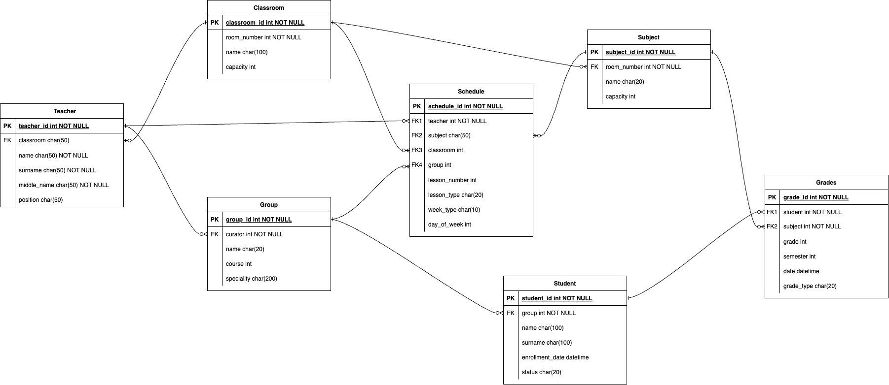

Лабораторная работа № 4
- Выбрать и реализовать модель БД (вариант 12)
Создать программную систему, предназначенную для учебной части колледжа. Она должна обеспечивать хранение сведений о каждом преподавателе, о дисциплинах, которые он преподает, номере закрепленного за ним кабинета, о расписании занятий. Существуют преподаватели, которые не имеют собственного кабинета. О студентах должны храниться следующие сведения: фамилия и имя, в какой группе учится, какую оценку имеет в текущем семестре по каждой дисциплине. Замдекана должен иметь возможность добавить сведения о новом преподавателе или студенте, внести в базу данных семестровые оценки студентов каждой группы по каждой дисциплине, удалить данные об уволившемся преподавателе и отчисленном из колледжа студенте, внести изменения в данные об преподавателях и студентах, в том числе поменять оценку студента по той или иной дисциплине. В задачу диспетчера учебной части входит составление расписания.

- Сериализаторы
# serializers.py - ИСПРАВЛЕННАЯ ВЕРСИЯ
from rest_framework import serializers
from django.contrib.auth.models import User
from .models import (
ClassRoom, Teacher, Group, Student,
Subject, Schedule, Grade
)
class ClassRoomSerializer(serializers.ModelSerializer):
class Meta:
model = ClassRoom
fields = '__all__'
class TeacherSerializer(serializers.ModelSerializer):
classroom_display = serializers.CharField(
source='classroom.room_number',
read_only=True
)
position_display = serializers.CharField(
source='get_position_display',
read_only=True
)
class Meta:
model = Teacher
fields = [
'id', 'surname', 'name', 'middle_name',
'position', 'position_display', 'classroom', 'classroom_display',
'is_active', 'user_account'
]
class GroupSerializer(serializers.ModelSerializer):
curator_name = serializers.CharField(
source='curator.__str__',
read_only=True
)
course_display = serializers.CharField(
source='get_course_display',
read_only=True
)
class Meta:
model = Group
fields = [
'id', 'name', 'course', 'course_display',
'specialty', 'curator', 'curator_name',
'created_year'
]
class StudentSerializer(serializers.ModelSerializer):
group_name = serializers.CharField(
source='group.name',
read_only=True
)
status_display = serializers.CharField(
source='get_status_display',
read_only=True
)
full_name = serializers.CharField(
source='get_full_name',
read_only=True
)
class Meta:
model = Student
fields = [
'id', 'surname', 'name', 'middle_name', 'full_name',
'group', 'group_name', 'enrollment_date',
'status', 'status_display', 'user_account'
]
class SubjectSerializer(serializers.ModelSerializer):
semester_display = serializers.CharField(
source='get_semester_display',
read_only=True
)
class Meta:
model = Subject
fields = '__all__'
class SimpleScheduleSerializer(serializers.ModelSerializer):
day_display = serializers.CharField(
source='get_day_of_week_display',
read_only=True
)
group_name = serializers.CharField(
source='group.name',
read_only=True
)
subject_name = serializers.CharField(
source='subject.name',
read_only=True
)
teacher_name = serializers.CharField(
source='teacher.__str__',
read_only=True
)
classroom_number = serializers.CharField(
source='classroom.room_number',
read_only=True
)
lesson_type_display = serializers.CharField(
source='get_lesson_type_display',
read_only=True
)
class Meta:
model = Schedule
fields = [
'id', 'day_of_week', 'day_display',
'lesson_number', 'group', 'group_name',
'subject', 'subject_name', 'teacher', 'teacher_name',
'classroom', 'classroom_number', 'lesson_type', 'lesson_type_display',
'week_type', 'start_date', 'end_date'
]
class GradeCreateSerializer(serializers.ModelSerializer):
"""Сериализатор для создания оценок"""
def validate_grade(self, value):
"""Валидация оценки"""
if value not in [2, 3, 4, 5]:
raise serializers.ValidationError("Оценка должна быть 2, 3, 4 или 5")
return value
class Meta:
model = Grade
fields = [
'student', 'subject', 'grade', 'grade_type',
'semester', 'date', 'teacher', 'comments'
]
# УБРАТЬ min_value и max_value из extra_kwargs
extra_kwargs = {
'grade': {'required': True},
'subject': {'required': True},
'student': {'required': True},
'semester': {'required': True},
'date': {'required': True},
}
class GradeListSerializer(serializers.ModelSerializer):
"""Сериализатор только для чтения (список оценок)"""
student_name = serializers.CharField(source='student.get_full_name')
subject_name = serializers.CharField(source='subject.name')
teacher_name = serializers.CharField(source='teacher.__str__')
grade_display = serializers.CharField(source='get_grade_display')
grade_type_display = serializers.CharField(source='get_grade_type_display')
class Meta:
model = Grade
fields = [
'id', 'student_name', 'subject_name',
'grade', 'grade_display', 'grade_type', 'grade_type_display',
'semester', 'date', 'teacher_name', 'comments'
]
class GradeUpdateSerializer(serializers.ModelSerializer):
"""Сериализатор для обновления оценок"""
def validate_grade(self, value):
if value not in [2, 3, 4, 5]:
raise serializers.ValidationError("Оценка должна быть 2, 3, 4 или 5")
return value
class Meta:
model = Grade
fields = [
'grade', 'grade_type', 'semester',
'date', 'teacher', 'comments'
]
- URLS
# urls.py
from django.urls import path
from rest_framework.authtoken.views import obtain_auth_token
from . import views
urlpatterns = [
# Аутентификация
path('token/', obtain_auth_token, name='api_token_auth'),
path('me/', views.CurrentUserAPIView.as_view(), name='current-user'),
# 1. Кабинеты
path('classrooms/', views.ClassRoomListAPIView.as_view(), name='classrooms-list'),
# 2. Преподаватели
path('teachers/active/', views.ActiveTeachersAPIView.as_view(), name='active-teachers'),
# 3. Группы
path('groups/course/<int:course>/', views.GroupsByCourseAPIView.as_view(), name='groups-by-course'),
path('groups/<int:group_id>/detail/', views.GroupDetailWithCuratorAPIView.as_view(), name='group-detail'),
# 4. Студенты
path('students/search/', views.StudentSearchAPIView.as_view(), name='student-search'),
path('groups/<int:group_id>/students/', views.StudentsByGroupAPIView.as_view(), name='students-by-group'),
# 5. Расписание
path('schedule/group/<int:group_id>/', views.GroupScheduleAPIView.as_view(), name='group-schedule'),
path('schedule/teacher/<int:teacher_id>/', views.TeacherScheduleAPIView.as_view(), name='teacher-schedule'),
path('schedule/day/<int:day_of_week>/', views.DailyScheduleAPIView.as_view(), name='daily-schedule'),
# 6. Дисциплины
path('subjects/course/<int:course>/semester/<int:semester>/',
views.SubjectsByCourseSemesterAPIView.as_view(), name='subjects-by-course-semester'),
# 7. Оценки
path('students/<int:student_id>/grades/', views.StudentGradesAPIView.as_view(), name='student-grades'),
path('grades/create/', views.GradeCreateAPIView.as_view(), name='grade-create'),
path('grades/<int:id>/update/', views.GradeUpdateAPIView.as_view(), name='grade-update'), # Исправлено
]
- Эндпоинты
# 1. Эндпоинт: Список всех кабинетов
class ClassRoomListAPIView(generics.ListAPIView):
"""Получить список всех кабинетов"""
queryset = ClassRoom.objects.all()
serializer_class = ClassRoomSerializer
permission_classes = [AllowAny]
filter_backends = [filters.SearchFilter]
search_fields = ['name', 'room_number']
# 2. Эндпоинт: Активные преподаватели
class ActiveTeachersAPIView(generics.ListAPIView):
"""Получить список активных преподавателей"""
queryset = Teacher.objects.filter(is_active=True)
serializer_class = TeacherSerializer
permission_classes = [AllowAny]
# 3. Эндпоинт: Группы по курсу
class GroupsByCourseAPIView(APIView):
"""Получить группы по номеру курса"""
permission_classes = [AllowAny]
def get(self, request, course):
groups = Group.objects.filter(course=course)
serializer = GroupSerializer(groups, many=True)
return Response(serializer.data)
# 4. Эндпоинт: Студенты группы
class StudentsByGroupAPIView(generics.ListAPIView):
"""Получить студентов конкретной группы"""
serializer_class = StudentSerializer
permission_classes = [AllowAny]
def get_queryset(self):
group_id = self.kwargs['group_id']
return Student.objects.filter(group_id=group_id, status='active')
# 5. Эндпоинт: Расписание для группы
class GroupScheduleAPIView(generics.ListAPIView):
"""Получить расписание для группы"""
serializer_class = SimpleScheduleSerializer
permission_classes = [AllowAny]
def get_queryset(self):
group_id = self.kwargs['group_id']
return Schedule.objects.filter(group_id=group_id).order_by(
'day_of_week', 'lesson_number'
)
# 6. Эндпоинт: Расписание для преподавателя
class TeacherScheduleAPIView(generics.ListAPIView):
"""Получить расписание для преподавателя"""
serializer_class = SimpleScheduleSerializer
permission_classes = [IsAuthenticated]
def get_queryset(self):
teacher_id = self.kwargs['teacher_id']
return Schedule.objects.filter(teacher_id=teacher_id).order_by(
'day_of_week', 'lesson_number'
)
# 7. Эндпоинт: Оценки студента
class StudentGradesAPIView(generics.ListAPIView):
"""Получить оценки студента"""
serializer_class = GradeListSerializer
permission_classes = [IsAuthenticated]
def get_queryset(self):
student_id = self.kwargs['student_id']
return Grade.objects.filter(student_id=student_id)
# 8. Эндпоинт: Дисциплины по курсу и семестру
class SubjectsByCourseSemesterAPIView(APIView):
"""Получить дисциплины по курсу и семестру"""
permission_classes = [AllowAny]
def get(self, request, course, semester):
subjects = Subject.objects.filter(course=course, semester=semester)
serializer = SubjectSerializer(subjects, many=True)
return Response(serializer.data)
# 9. Эндпоинт: Поиск студентов
class StudentSearchAPIView(generics.ListAPIView):
"""Поиск студентов по имени/фамилии"""
serializer_class = StudentSerializer
filter_backends = [filters.SearchFilter]
search_fields = ['surname', 'name', 'middle_name']
permission_classes = [AllowAny]
def get_queryset(self):
return Student.objects.filter(status='active')
# 10. Эндпоинт: Расписание на день
class DailyScheduleAPIView(APIView):
"""Получить расписание на конкретный день недели"""
permission_classes = [AllowAny]
def get(self, request, day_of_week):
schedules = Schedule.objects.filter(day_of_week=day_of_week)
serializer = SimpleScheduleSerializer(schedules, many=True)
return Response(serializer.data)
# 11. Эндпоинт: Информация о группе с куратором
class GroupDetailWithCuratorAPIView(APIView):
"""Получить детальную информацию о группе с куратором"""
permission_classes = [AllowAny]
def get(self, request, group_id):
group = get_object_or_404(Group, id=group_id)
group_serializer = GroupSerializer(group)
response_data = group_serializer.data
if group.curator:
curator_serializer = TeacherSerializer(group.curator)
response_data['curator_details'] = curator_serializer.data
active_students = Student.objects.filter(
group=group,
status='active'
).count()
response_data['active_students_count'] = active_students
return Response(response_data)
# 12. Эндпоинт: Создание оценки
class GradeCreateAPIView(generics.CreateAPIView):
"""Создать новую оценку"""
queryset = Grade.objects.all()
serializer_class = GradeCreateSerializer
permission_classes = [IsAuthenticated]
# 13. Эндпоинт: Обновление оценки
class GradeUpdateAPIView(generics.UpdateAPIView):
"""Обновить оценку"""
queryset = Grade.objects.all()
serializer_class = GradeUpdateSerializer
permission_classes = [IsAuthenticated]
lookup_field = 'id'